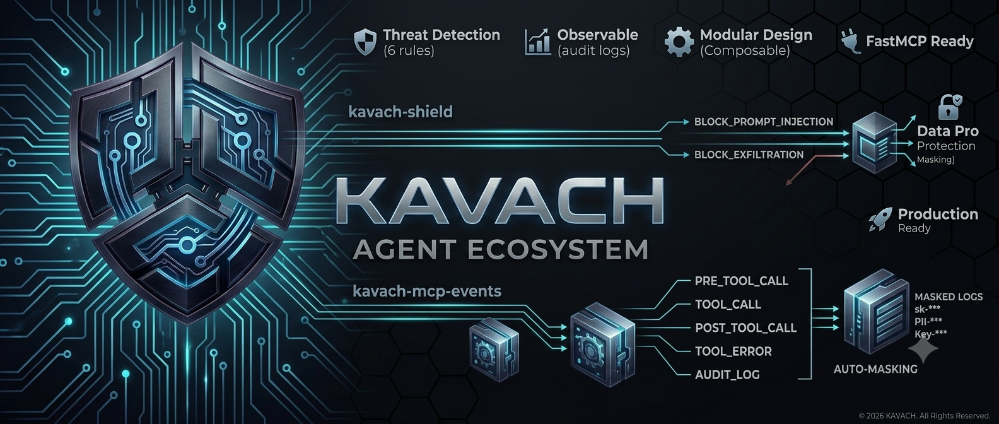

Kavach Shield
Middleware for MCP servers that inspects requests, blocks unsafe actions, and applies strict policies before the tool call leaves the agent boundary.
Security infrastructure for agentic systems
Protect MCP tool calls, detect hostile prompts, mask sensitive payloads, and watch every agent action through one dark, operational control plane.

Detect injection
Redact PII/API keys
Block unsafe tools
Trace every action
Policy engine active
Platform
Kavach sits between agent reasoning and tool execution, giving teams the controls they expect from production infrastructure without slowing down developer workflows.
Middleware for MCP servers that inspects requests, blocks unsafe actions, and applies strict policies before the tool call leaves the agent boundary.
A structured event bus for tracing agent sessions, tool lifecycle events, policy outcomes, and downstream security integrations.
High-signal logs with automatic masking for tokens, credentials, personal data, and payloads that should never hit observability backends raw.
Threat rules
Every request is scored against practical controls for the failure modes modern agent systems already face.
Architecture
Each stage produces policy context, telemetry, and a decision trail that developers can debug and security teams can audit.
Prompt, context, tool intent
Inspects requests and enforces allow/block policies.
Broadcasts session, policy, and tool lifecycle events.
Masks secrets and emits safe operational logs.
Developers
Wrap your MCP server with strict middleware, ship masked logs, and expand rules as your agent workflows grow.
Open GitHubpip install kavach-shield
from kavach_shield import KavachMiddleware
mcp.add_middleware(
KavachMiddleware(
strict=True,
mask_secrets=True,
emit_events=True
)
)